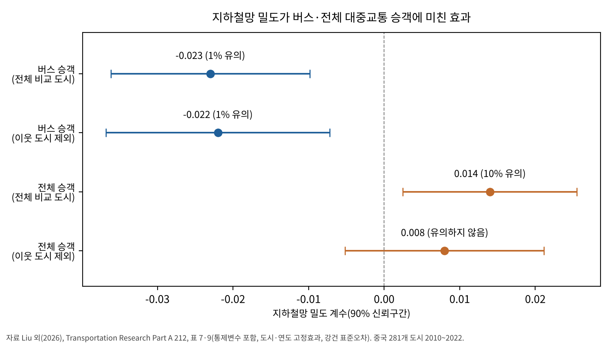
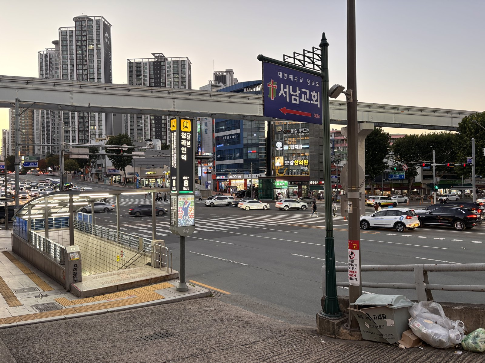
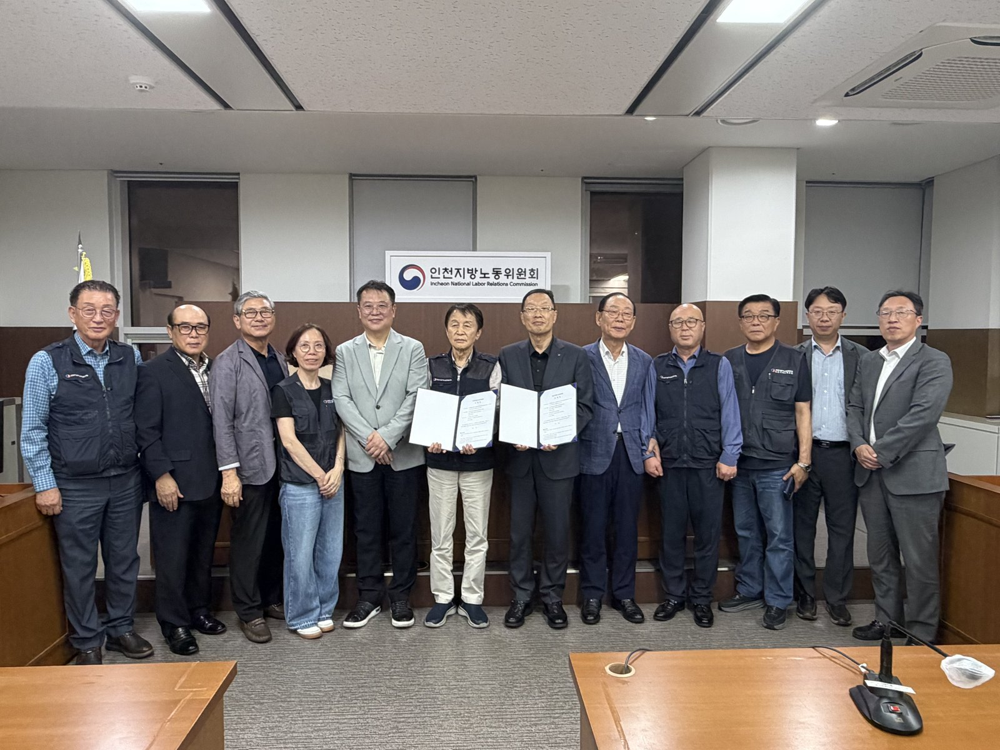

중국 281개 도시의 지하철망 확장과 버스 승객 감소
전체 대중교통 승객 증가는 10% 수준 유의
대구 3호선 개통 뒤 버스 승객의 철도 전환
AI경제저널=김갑봉 기자 | Liu 외 연구진 8명이 2026년 8월 국제학술지 『Transportation Research Part A』 212권에 논문을 실었다. 중국 도시의 지하철망 확장과 시내버스 승객의 관계를 다룬 논문이다.
연구진은 지하철망 밀도가 1% 오르면 버스 승객은 2.3% 줄고, 버스와 지하철을 합한 전체 승객은 1.4% 는다고 해석했다.
국내 연구에서도 버스 승객이 철도로 옮겨 간 흐름이 나타났다. 대구 도시철도 3호선 개통 뒤 늘어난 철도 승객은 대부분 버스에서 넘어왔고, 전체 대중교통 통행은 늘지 않았다. 준공영제 시도와 민영제 시도의 시내버스 효율도 갈렸다.
281개 도시 13년 패널
연구진은 2010~2022년 중국 281개 도시 자료를 썼다. 지하철망 밀도는 노선 총연장을 도시 시가지 면적으로 나눈 값이다. 연구진은 지하철망 밀도를 연속형 처치 변수로 쓴 이중차분법으로 도시와 연도의 차이를 걸러 냈다.
지하철망 밀도의 계수는 버스 승객에 −0.023으로 1% 수준에서 유의했다. 전체 승객에는 0.014로 10% 수준에서만 유의했다. 개통 여부만 따진 분석에서도 버스 승객 감소(−0.085)는 유의했고, 전체 승객 증가는 유의하지 않았다.
이웃 도시로 번지는 효과를 걸러 낸 점검에서도 버스 쪽 결과는 같았다. 지하철 도시와 맞닿은 비교 도시를 빼고 1911개 관측으로 다시 추정하자 버스 승객 계수는 −0.022로 1% 수준에서 유의했다. 전체 승객 계수는 유의하지 않았다.

전체 승객이 느는 효과는 개통 4년 뒤에야 뚜렷해졌다. 중국 버스 승객은 연인원으로 2014년 660억명에서 2019년 570억명으로 줄었다.
17개 대도시의 운영 효율
이 논문의 본 분석은 17개 대도시의 운영 효율이다. 연구진은 2019년 지하철이 있던 중국 37개 도시 가운데 자료가 갖춰진 베이징, 상하이 등 17곳의 2014~2019년 자료를 썼다. 281개 도시 분석은 결과를 넓히려고 덧붙인 추가 분석이다.
효율은 직원·노선·차량을 투입으로, 승객을 산출로 놓은 동적 네트워크 자료포락분석으로 쟀다. 밀도가 높은 도시의 기준은 상위 4분의 1로, 지하철망 0.31㎞/㎢, 버스망 22.86㎞/㎢였다.
지하철망 밀도가 높은 도시와 낮은 도시의 버스 운영 효율 차이는 유의하지 않았다. 버스망 밀도가 높은 도시는 지하철 운영 효율 점수가 0.217 낮았다. 연구진은 해안 도시 여부를 도구변수로 쓴 2단계 최소제곱 추정으로 이 결과를 다시 점검했다.
연구진은 지하철 확장과 버스 노선 정비를 함께 추진하라고 제언했다. 표본이 17개 도시와 6년에 그친 점은 한계로 밝혔다. 도시마다 발전 단계와 보조금 방식이 달라 효율 값은 조심해 읽어야 한다고도 덧붙였다.
대구 3호선 개통 전후 교통카드
황정훈·정연식(2022)은 『대한토목학회논문집』 42권 3호에 대구 3호선 개통 전후의 대중교통 통행을 비교했다. 자료는 2015년 4월 6~10일, 2016년 4월 4~8일, 2019년 4월 8~12일 평일 닷새의 대구·경산 교통카드다.

경산 버스 이용 수요의 절반 이상은 대구 방면이다. 도시철도 2호선도 경산 영남대까지 이어져 연구진은 두 도시 자료를 묶었다.
하루 평균 대중교통 통행은 2015년 125만5607건, 2016년 125만5894건, 2019년 120만4111건이었다. 도시철도는 연평균 6.1% 늘고 대구 버스는 4.8% 줄었다. 3호선 통행 약 6.6만건은 버스 감소 폭과 비슷했다.
대구시는 2015년 8월 버스 40대를 줄이고 노선 17개를 새로 만들고 28개를 바꾸고 17개를 없앴다. 운행 대수는 1561대에서 1521대가 됐고, 2019년 하반기에 10대를 다시 늘렸다.
연구진은 노선 조정이 버스 수요를 얼마나 줄였는지는 자료 한계로 따지지 못했다고 밝혔다. 대구 안 환승 통행은 연평균 3.3% 줄었다.
대구교통공사 운영 통계로 보면 3호선 하루 평균 승차 인원은 2019년 7만7204명, 2020년 5만3974명, 2025년 7만600명이다. 2025년 1~3호선 전체는 하루 평균 40만1944명이었다.
한국 시내버스 효율 비교

최승현 외(2024)는 『대한교통학회지』 42권 1호에 2017~2021년 16개 시도의 시내버스 효율을 자료포락분석으로 비교했다. 2021년 기준 준공영제 7개 시도(서울·부산·대구·인천·광주·대전·제주)와 민영제 9개 시도다.
같은 해 국내 시내버스 업체는 370곳이었다. 운영 방식별로 준공영제가 60.0%, 민영제가 38.8%, 공영제가 1.2%를 차지했다.
기술효율은 준공영제 시도가 0.94~0.99, 민영제 시도가 0.77~0.83이었다. 규모의 비효율을 걷어 낸 순수기술효율은 2017년 준공영제 1.00, 민영제 0.96으로 차이가 좁았다.
세 연구 모두 도시나 시도 합계로 분석했다. 최승현 외(2024)는 업체·노선 단위 분석을 다음 과제로 남겼다. Liu 외 연구진은 더 많은 도시를 담은 후속 연구가 가능해질 것이라고 밝혔다.
참고문헌
- Liu, M., Jin, S., Zhang, C., Gao, K., Yang, C., Bai, C., Gao, X., Xu, W.(2026). "Metro prosperity and bus decline: A causal relationship? A quasi-experimental study of 17 key cities in China". Transportation Research Part A: Policy and Practice 212, 105182, https://doi.org/10.1016/j.tra.2026.105182
- 황정훈·정연식(2022). 「도시철도 개통에 따른 대중교통 통행량 변화 분석: 대구도시철도 3호선 개통을 대상으로」. 『대한토목학회논문집』 42(3), 371–377, https://doi.org/10.12652/Ksce.2022.42.3.0371
- 최승현·조규석·유연승·도명식(2024). 「시내버스 운송업의 운영효율성 분석: 준공영제와 민영제 비교를 중심으로」. 『대한교통학회지』 42(1), 94–106, https://doi.org/10.7470/jkst.2024.42.1.094
- 대구교통공사, 「운영현황 — 수송 및 수입현황」, 누리집(최근 수정 2026년 7월 27일), https://www.dtro.or.kr/index.do?menu_id=00000420
- 인천광역시, 「인천 시내버스 멈추지 않았다 노‧사 임금‧단체 협상 최종타결」 보도자료, 버스정책과, 2026년 8월 26일, https://www.incheon.go.kr/IC010205/view?repSeq=DOM_0000000015403650
[사진 출처]
- [사진 1] 인천광역시 버스정책과, 「인천 시내버스 멈추지 않았다 노‧사 임금‧단체 협상 최종타결」 보도자료(2026년 8월 26일) 붙임 사진, 공공누리 출처표시, https://www.incheon.go.kr/IC010205/view?repSeq=DOM_0000000015403650
- [사진 2] Packer25, 「2025-10-27 17.43.02 daegu cheongnahillstation.jpg」, 위키미디어 공용, CC0, https://commons.wikimedia.org/wiki/File:2025-10-27_17.43.02_daegu_cheongnahillstation.jpg
※ 이 기사는 AI 프로그램 클로드를 활용해 작성했습니다.
관련기사
- 버스 1km 원가, 회사 크기보다 달리는 속도가 갈랐다
- [항공] 같은 강풍에 김포 9분·제주 4분…공항 장비가 지연 갈랐다
- 해상풍력과 어업의 공존 조건, 보상·안전 같은 위험 규칙
- 로봇과 일자리·노동 몫, 한국·미국·유럽·중국 실증논문 네 편 비교
저작권자 © AI경제저널 무단전재 및 재배포, AI학습 및 활용 금지